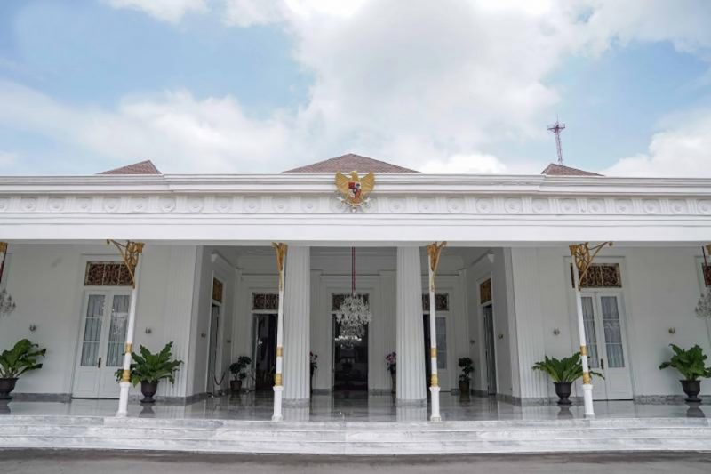
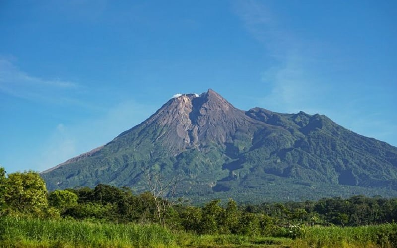
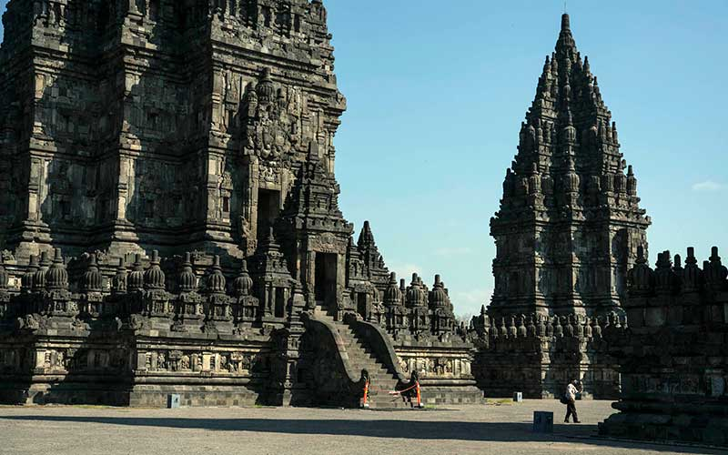
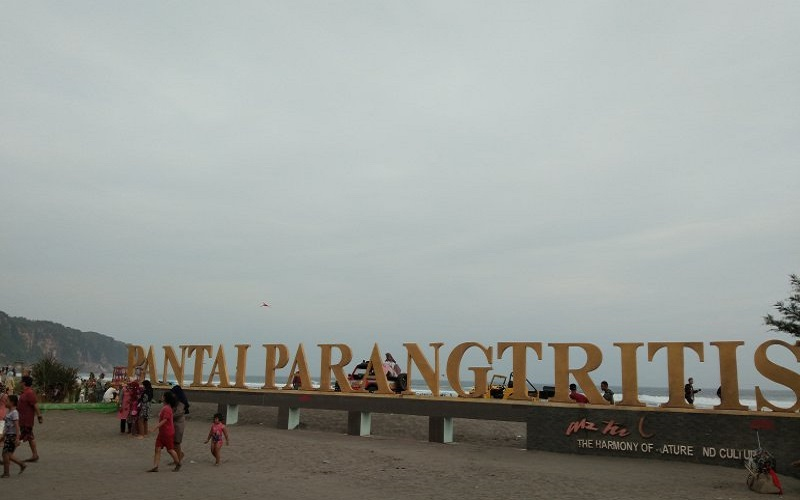

Sejarah

Sebelum Indonesia merdeka, Yogyakarta merupakan daerah yang mempunyai pemerintahan sendiri atau disebut Zelfbestuurlandschappen/Daerah Swapraja, yaitu Kasultanan Ngayogyakarta Hadiningrat dan Kadipaten Pakualaman. Kasultanan Ngayogyakarta Hadiningrat didirikan oleh Pangeran Mangkubumi yang bergelar Sultan Hamengku Buwono I pada tahun 1755, sedangkan Kadipaten Pakualaman didirikan oleh Pangeran Natakusuma (saudara Sultan Hamengku Buwono II) yang bergelar Adipati Paku Alam I pada tahun 1813.
Pemerintah Hindia Belanda mengakui Kasultanan, dan Pakualaman sebagai kerajaan dengan hak mengatur rumah tangganya sendiri yang dinyatakan dalam kontrak politik. Kontrak politik yang terakhir Kasultanan tercantum dalam Staatsblaad 1942 Nomor 47, sedangkan kontrak politik Pakualaman dalam Staatsblaad 1941 Nomor 577. Eksistensi kedua kerajaan tersebut telah mendapat pengakuan dari dunia internasional, baik pada masa penjajahan Belanda, Inggris, maupun Jepang. Ketika Jepang meninggalkan Indonesia, kedua kerajaan tersebut telah siap menjadi sebuah negara sendiri yang merdeka, lengkap dengan sistem pemerintahannya (susunan asli), wilayah, dan penduduknya.
Geografis

Daerah Istimewa Yogyakarta terletak di bagian tengah-selatan Pulau Jawa, secara geografis terletak pada 8º 30'-7º 20' Lintang Selatan, dan 109º 40'-111º 0' Bujur Timur. Berdasarkan bentang alam, wilayah DIY dapat dikelompokkan menjadi empat satuan fisiografi, yaitu satuan fisiografi Gunungapi Merapi, satuan fisiografi Pegunungan Sewu atau Pegunungan Seribu, satuan fisiografi Pegunungan Kulon Progo, dan satuan fisiografi Dataran Rendah.
Satuan fisiografi Gunung api Merapi, yang terbentang mulai dari kerucut gunung api hingga dataran fluvial gunung api termasuk juga bentang lahan vulkanik, meliputi Sleman, Kota Yogyakarta dan sebagian Bantul. Daerah kerucut, dan lereng gunung api merupakan daerah hutan lindung sebagai kawasan resapan air daerah bawahan. Satuan bentang alam ini terletak di Sleman bagian utara. Gunung Merapi yang merupakan gunungapi aktif dengan karakteristik khusus, mempunyai daya tarik sebagai objek penelitian, pendidikan, dan pariwisata.
Satuan Pegunungan Selatan atau Pegunungan Seribu, yang terletak di wilayah Gunungkidul, merupakan kawasan perbukitan batu gamping dan bentang alam karst yang tandus, dan kekurangan air permukaan, dengan bagian tengah merupakan cekungan Wonosari yang telah mengalami pengangkatan secara tektonik sehingga terbentuk menjadi Plato Wonosari (dataran tinggi Wonosari). Satuan ini merupakan bentang alam hasil proses solusional (pelarutan), dengan bahan induk batu gamping, dan mempunyai karakteristik lapisan tanah dangkal, dan vegetasi penutup sangat jarang.
Satuan Pegunungan Kulon Progo, yang terletak di Kulon Progo bagian utara, merupakan bentang lahan struktural denudasional dengan topografi berbukit, kemiringan lereng curam, dan potensi air tanah kecil.
Satuan Dataran Rendah, merupakan bentang lahan fluvial (hasil proses pengendapan sungai) yang didominasi oleh dataran aluvial, membentang di bagian selatan DIY, mulai dari Kulon Progo sampai Bantul yang berbatasan dengan Pegunungan Seribu. Satuan ini merupakan daerah yang subur. Termasuk dalam satuan ini adalah bentang lahan marin dan eolin yang belum didayagunakan, merupakan wilayah pantai yang terbentang dari Kulon Progo sampai Bantul. Khusus bentang lahan marin dan eolin di Parangtritis Bantul, yang terkenal dengan gumuk pasirnya, merupakan laboratorium alam untuk kajian bentang alam pantai.
Wisata
Yogyakarta merupakan destinasi wisata yang kaya akan tempat menarik. Beberapa tempat wisata populer di Daerah Istimewa Yogyakarta meliputi :
Candi Prambanan

Bangunan candi bercorak agama Hindu terbesar di Indonesia yang dibangun pada abad ke-9 Masehi. Candi yang juga disebut sebagai Rara Jonggrang ini dipersembahkan untuk Trimurti, tiga dewa utama Hindu yaitu dewa Brahma sebagai dewa pencipta, dewa Wisnu sebagai dewa pemelihara, dan dewa Siwa sebagai dewa pemusnah. Berdasarkan prasasti Siwagrha nama asli kompleks candi ini adalah Siwagrha (bahasa Sanskerta yang bermakna 'Rumah Siwa'), dan memang di garbagriha (ruang utama) candi ini bersemayam arca Siwa Mahadewa setinggi tiga meter, dikarenakan aliran Syaiwa yang mengutamakan pemujaan dewa Siwa di candi ini.
Pantai Parangtritis

Tempat wisata yang terletak di Kalurahan Parangtritis, Kapanéwon Kretek, Kabupaten Bantul, Daerah Istimewa Yogyakarta. Jaraknya kurang lebih 27 km dari pusat kota. Pantai ini menjadi salah satu destinasi wisata terkenal di Yogyakarta dan telah menjadi ikon pariwisata di Yogyakarta.
Pantai yang terletak di sisi timur Pantai Parangkusumo ini memiliki legenda yang melekat dengan Ratu Kidul sebagai penguasa laut selatan dan keindahannya. Pantai ini merupakan pantai yang cukup luas di Yogyakarta, berbeda dengan pantai-pantai di kawasan Yogyakarta lainya seperti Pantai di Gunungkidul yang ukurannya relatif kecil.